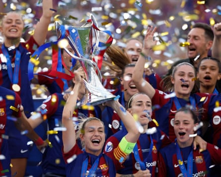
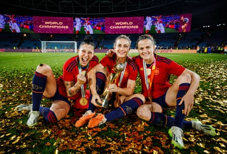
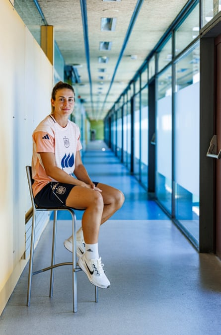

‘I t wasn’t my knee that hurt, it was my soul,” the Queen says, but now she is back. There is a look in Alexia Putellas’s eye, a light. “You know that feeling, that sense of security when it’s like you’re capable of anything?” the double Ballon d’Or winner says, leaning forward on a sofa at Spain’s Las Rozas HQ.
“At that moment, I felt it. And now I’ve got that feeling once again. I’m happy; the desire for these Euros is huge. I can’t wait to start, to go and give my everything.” And Alexia Putellas’s everything is everything .
These are her third Euros – she scored a 94th-minute winner against England on competitive debut in 2013, aged 19, although she does not remember if she was given the goal – an indicator of how far she has come. Not only since 2013 but since the last time too. Switzerland stands as a kind of redemption, a reclaiming of her place after an English summer, and so much more, was taken from her by a torn cruciate suffered at Bisham Abbey a day before Euro 22 began.
It was, she says, an hostia , the worst of blows. “I had felt really good, and then … I knew the moment it happened. I heard a sound like a branch breaking. ‘No, not now.’ You never expect it, but at that moment. It’s the day before.”
Putellas had arrived as the world’s best player, the tournament’s greatest icon , but when the selección kicked off in Milton Keynes she sat by the touchline in a baseball cap and Virginia Torrecilla’s shirt, crutches at her side . Two hundred and ninety-nine days would pass until she played again. Two years passed, two more operations – a World Cup, two league titles and a Champions League, attention and affection turned elsewhere – before Putellas was Putellas again, not just physically but emotionally. “People don’t know that with injuries you train more than when you’re healthy but you don’t get the reward of playing,” she says.
“I’m competitive and you set yourself challenges: ‘When can I start walking?’ ‘A month.’ ‘OK, in three weeks, I’ll be there.’ But at first there’s nothing. Just pain. And I felt a lot of pain. I couldn’t sleep. I didn’t have any appetite. It was a vicious circle. To even move, you have to …”
Barcelona’s Alexia Putellas lifts the Women’s Champions League trophy. ‘There’s a moment I feel liberated and that’s Bilbao.’Photograph: Albert Gea/Reuters
Putellas hauls her leg on to the sofa, a demonstration of the dead weight. “Post-op I had a very bad time,” she says, and it is not as if what followed was much easier either. “You go from playing at a stratospheric level to not being able to walk, not knowing how, learning aged 27, 28.
“You get to the gym, which is at least your habitat. Then the pitch, where you think you’re progressing but frustration comes because your last memory playing was like that and now you can’t play a pass, can’t turn, can’t control. There are times you wonder [if you ever will].”
“They warn you that the day you get the medical all-clear, play again, it’s still not done: you need time, adaptation, competition. Don’t think you’ll be the same; that’s just not real. You still have three, six months. You have to try to give yourself that margin, control your emotions. And right in the middle of that period is a World Cup.”
Putellas returned in late April 2023, after 10 months out. But given the final minute of the Champions League final, reward after her rehabilitation, she arrived at the World Cup having made six appearances, all as a substitute, and those warnings are not always easy to hear. “You don’t go thinking: ‘I’m in that three-to-six month period’; you go thinking: ‘I’ll give my best.’
“Two years later, I see it: my level is completely different, even if at the time you don’t realise. You’re not the same physically as before. There are things going on, too. I arrived feeling confident; then came [defeat to] Japan and I was the head cut.”
Did she feel singled out? “No, not singled out. I understand that if things aren’t working the coach has to change someone and it was me, and that’s that.”
That wasn’t that, however. Putellas played an hour in the semi-final and a minute in the final. Spain’s historic win , secured by a squad including only three of 15 players who had pulled out demanding improvements , was overshadowed by the Spain federation’s president Luis Rubiales’s unsolicited kiss of Jenni Hermoso.
Again, Putellas took the lead , which was not to say it was welcome, rather that responsibility demanded it. “I wish it hadn’t happened,” she says. “You try to tell yourself: ‘It’s great, we’ve just won the World Cup,’ but you see the press, people, everything, and the focus isn’t there. It was a shit situation, unpleasant, a burden.”
Alexia Putellas holds the Women’s World Cup trophy alongside Jennifer Hermoso and Irene Paredes.Photograph: Pablo García
In November Putellas underwent another operation, this time on her meniscus , a common consequence of cruciate tears. She missed 21 matches through to March, the doubts increasing, people saying her moment had passed, that she wouldn’t ever be the same.
“I’m not going to lie: it gets to you,” she says. “There are those close to you going through it, suffering, thinking you won’t make it. I understand because the reality is there are cases where players don’t get back, and it’s not personal. [But] people don’t know.”
In part that goes with being Putellas: the world’s best player, a footballer of huge symbolic significance, subjected to an exposure unimaginable before. A leader in the fight for professionalisation. A Ballon d’Or winner too, The Queen. “It’s been hard for me to come to understand that,” she says. “I see football collectively, everybody equal. At first, it was difficult to manage the attention. I was very introverted. And when the individual awards started arriving it was like: ‘I don’t understand this’. With time, I came to feel: ‘Well, they’ve put you there, fate wanted you there: use it.’ A lot of what I did wasn’t for me, but to make the game grow.
“Take the Prime documentary: I didn’t want to do it. I said no four times. I watch a lot of sports documentaries and one day I was looking for one about a sportswoman. I only found Carolina Marín, the badminton player. That was the click. And I said: ‘Do it’.”
Did you like it? Putellas smiles. “They might kill me for this, but I haven’t seen it. I mean, I saw it, but before it was finished. I know how I am. I don’t have the ego to watch myself.
“It’s not that I’m saying I’m nothing, but there have been many times I’ve felt like wearing No 11, being Alexia, is different and it [shouldn’t be]. Starting with the management of this injury, the management of expectation, the management of the pressure and everything. But for better or worse, I’m Alexia.
“Now I handle that better. I don’t focus on the [eulogies] or those who want to kill me. A friend said: ‘I don’t know how you do it but they either love you or hate you.’ I try not to focus on either.”
Well, most of the time, motivation found in those who doubted she would return. “To tell the truth, that was also fuel, petrol. A challenge,” Putellas says. “Like: ‘You’ll see.’” Oh, they see.
Alexia Putellas expects a ‘hard, hard’ Euros for Spain.Photograph undefined: Pablo García
Putellas arrives at the Euros as one of the continent’s outstanding players, scorer of 22 goals last season and provider of 17 assists, directly involved in a goal (score, assist) every 44 minutes for Barcelona. Voted player of the season in Liga F, she has created more chances than anyone in Europe’s top five leagues. AS summed it up: “The best Alexia is back, or maybe even better.”
When she returned to a struggling Spain side in February, six months later, she led a hammering of Portugal, a glorious roulette drawing a standing ovation from Vigo’s Balaídos stadium. Defeat to Arsenal in the Champions League final hurt – it still does – but en route she had scored or assisted against every European opponent. It has been coming a year since the previous season’s final, a refound consistency positioning her as a Ballon d’Or candidate again at 31. “There’s a moment I feel liberated and that’s Bilbao,” she says.
With five minutes remaining in the 2024 Champions League final against Lyon, she was sent on to protect a one-goal lead; instead she scored the goal that secured the title . Barcelona were European champions again and she was bowing before fans, 697 days after her cruciate tore.
“Physically you can be good, but if mentally you’re not there, you’re tense, you can’t control yourself as you did. It’s not that I came off the pitch that day thinking: ‘I can do it,’ so much as: ‘That’s it,’ ‘time’s come.’ The cruciate, the meniscus, the whole injury: you’ve closed that cycle. Done. I felt free. And from there, I’ve felt super good.”
So here she is, 12 years on from her first Euros, three from what should have been her last, a legacy already left and more to leave. She gestures towards the end of the corridor, to the dressing room. Their dressing room now, their own place. Small details, she says, but ones that matter.
“I remember the first time [in 2013] perfectly. There’s a goal that hit my pony tail and we won 3-2,” Putellas recalls. “I picture myself as a girl, I hardly knew where I was. Everything has grown. I’ve developed as a woman too. That day, I would never have imagined how things are now, for me or women’s football.
“That was a moment of transition, and I lived both eras. However much I wanted to be a footballer, if everything isn’t [in place], you won’t be; you couldn’t plan this career. I like this sport so much I’m enjoying it being professional. It’s nothing like then. It’s a joy now here; I hadn’t lived this, ever.”
“I think these Euros will be unique. It’s the trophy we’re missing, and we feel it could be now, but we’re facing very good teams and we know it’s a hard, hard journey,” Putellas says.
“The cruciate was one day before it started last time, which was very tough to take. And on top of that just when I had felt really good, too. It’s been a long time, and people really have no idea what you go through but this year I have that feeling again. The challenge for me now is to keep going or even get better in these Euros. I just want to play football.”